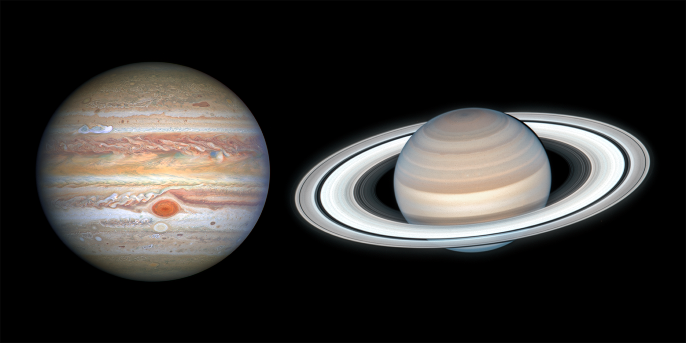
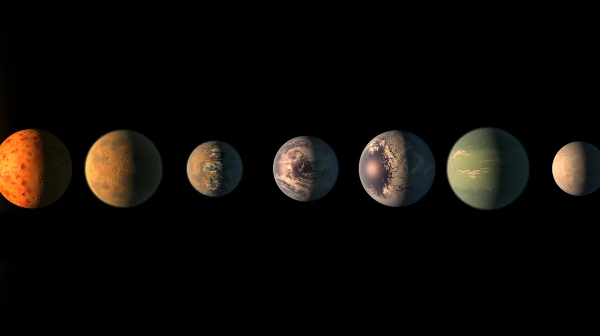

Rocky planets, like Earth, are believed to form through two primary mechanisms: core accretion and pebble accretion. By simulating the complex physics of these processes, we can better understand how the terrestrial planets of our solar system took shape and place meaningful constraints on the properties of rocky exoplanets in distant planetary systems.
Core accretion refers to terrestrial planet growth through a cascade of violent collisions between Moon and Mars sized solid bodies. I have developed numerical tools that model the fragment production in these collisions and tracks how these fragments affect the subsequent planet formation process. Read more about it here.

Terrestrial planet formation in the Solar System was greatly influenced by the giant planets, Jupiter and Saturn. By changing the masses of these planets and modeling core accretion in N-body simulations, we can better understand the role that the giant planets had in shaping the final properties of Mercury, Venus, Earth, and Mars. Read more about it here.

Pebble accretion is the process by which terrestrial planets grow within a gas and dust disk. As a protoplanet migrates through the disk, it efficiently captures small pebbles, rapidly increasing its mass in a manner similar to a snowball accumulating material. By building new numerical tools to model the underlying physics of this process, we have simulated the formation of the TRAPPIST-1 planets and placed constraints on their bulk compositions and atmospheres. Our predictions for the two innermost planets have been confirmed by JWST, and ongoing observations are on track to validate our predictions for the outer planets as well. Read more about it here.